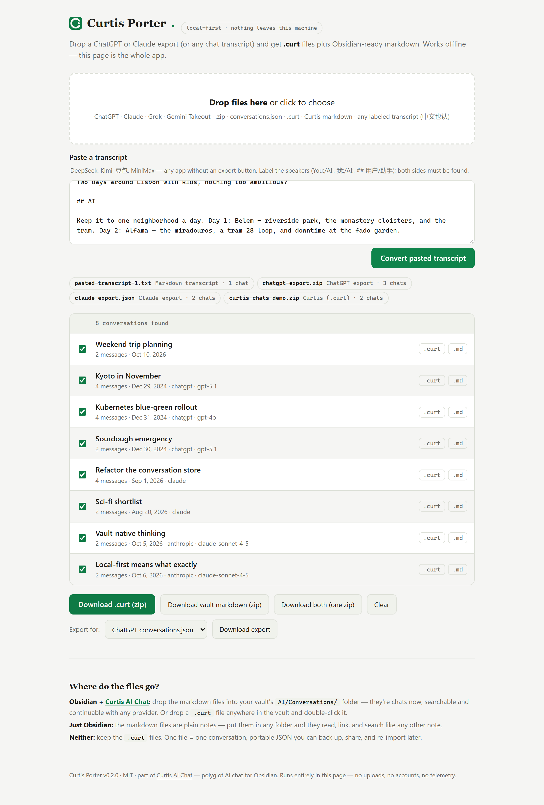

Port conversations out of ChatGPT, Claude, Grok, Gemini, DeepSeek — any AI tool that can export or copy — into .curt files and Obsidian-ready markdown, and back out to continuation packs, ChatGPT-shape JSON or API JSONL.
● The web app on this site is the whole app. It runs in your browser — nothing is uploaded, ever.

AI exports are hostile JSON dumps — ChatGPT nests messages in a branch tree, Claude mixes text and content blocks, DeepSeek has no bulk export at all. Curtis AI Porter reads all of them.
A ChatGPT or Claude export zip, a Grok archive, Gemini Takeout, a Curtis bulk export — or paste a transcript from apps with no export button.
You never pick a format. Conversations already seen are skipped, so re-running an import can't double-port an export.
.curt files, vault markdown, or both in one zip. Then export back out — continuation pack, ChatGPT-shape JSON, API JSONL.
Paste or drop — you never pick a format.
| Source | You give it | Got from |
|---|---|---|
| ChatGPT | the export zip or conversations.json | Settings → Data controls → Export |
| Claude | the export zip or conversations.json | Settings → Privacy → Export data |
| Grok | the data-export JSON archive | grok.com → Settings → Data export |
| Gemini | Takeout “My Activity” JSON | takeout.google.com → My Activity |
| Curtis bulk export | the curtis-chats-*.zip | Curtis: “Export all chats as .curt (zip)” |
| Curtis (.curt / markdown) | a Curtis portable file or transcript | Curtis: chat header → Save as .curt |
| DeepSeek, Kimi, 豆包, MiniMax, anything | a pasted or saved transcript | select, copy, paste into the web app (中文标签 我/AI/助手 也认) |
Edge cases and details: docs/PORTING.md.
Your chat history shouldn't live hostage inside someone else's app.
One file, one conversation. Portable JSON: back it up, share it, move it between vaults and machines, re-import it into Curtis anytime. Full fidelity — ids, timestamps, token stats, images, tool calls survive verbatim.
Drop-in transcript files for your vault's AI/Conversations/ folder. Searchable in Obsidian, continuable in Curtis with any provider, readable forever as plain notes.
Porting runs both ways: .curt files and Curtis markdown go back out to three targets.
A markdown continuation pack built to be attached to a live ChatGPT, Claude or Gemini chat: a preamble tells the model to adopt the transcript's context and continue from the last message. Turns are trimmed to a token budget (default 30000) that always keeps the first user message plus the most recent turns. No platform offers a write API — this works around it.
A ChatGPT-export-shaped conversations.json, for tools that read ChatGPT exports (TypingMind and similar).
One {"messages": [...]} per line, the API shape: replay, fine-tune prep, JSON importers.
Porter moves history; Curtis is where it lives. Curtis AI Chat is polyglot AI chat for Obsidian — 30+ providers in one sidebar, an agent that works your vault, and conversations saved as plain files. Local-first like the porter.
Cloud APIs or fully offline — local models via Ollama and LM Studio, no API key, nothing leaves your machine.
Eleven built-in tools to read, create and edit your vault notes — and bring your own MCP servers; their tools join the agent's toolset.
Stream the same prompt to two models side by side, stop either column, promote the winner to a chat.
Chats save into your vault as markdown and .curt — memory you can open in any text editor, forever.
● Drop a ported transcript into AI/Conversations/ and it appears in Curtis history immediately — the shared format is the whole trick.
The same converter as a Node CLI, for bulk runs and pipelines. Build from source:
# once
git clone https://github.com/JordanNewell/curtis-ai-porter
cd curtis-ai-porter && npm install && npm run build
# in
curt-porter convert ~/Downloads/chatgpt-export.zip
curt-porter convert conversations.json --out ./curt --format curt --zip
# out
curt-porter export ~/vault/AI/Conversations/*.md --to continuation --zip
curt-porter export ./curt/*.curt --to chatgpt-json
# or serve the web app on localhost:7777
curt-porter serveThe repo also ships as an Obsidian plugin: a ribbon icon, a “Port chats into this vault…” command, and right-click “Port into vault (Curtis AI Porter)” on .zip / .json / .curt / .md / .txt files in the explorer. Ported transcripts are written straight into the vault (output folder is a setting, with an optional .curt copy alongside).
Standalone — it works without Curtis AI Chat installed. When both are present, the shared format means ported chats appear in Curtis history immediately. Grab main.js + manifest.json from the latest release.
One conversation per file, JSON with a magic field and a version. Chosen over markdown for portability: no escaping edge cases, and base64 images or tool-call metadata survive byte-perfect.
{
"curt": "curtis-conversation",
"version": 1,
"conversation": {
"id": "conv_1791000000000_abc123def",
"title": "Weekly review",
"createdAt": 1791000000000,
"updatedAt": 1791000600000,
"provider": "anthropic",
"model": "claude-sonnet-4-5",
"messages": [ { "id": "msg_…", "role": "user", "content": "…", "timestamp": 1791000000000 } ]
}
}The sample only shows the floor. A .curt file carries everything — including the data no competitor's export has:
Foreign exports carry only a slice — ChatGPT gives you text, timestamps and the model, a paste gives you text alone. Porter never invents the rest; .curt is the only format that preserves it. The full fidelity matrix lives in the format spec.
No accounts, no uploads, no telemetry. The web app is a single HTML file that runs from this site or straight from disk; the CLI is a Node script; the plugin lives inside Obsidian. There are no network calls anywhere in the codebase. The conversion happens on your machine, period.